Objetivo
Dar a conocer el diccionario, su estructura y los principales tipos de diccionario, permitir la reflexión sobre su utilidad, mostrar cómo se usa y poner en práctica todos estos conocimientos.
Instrucciones generales
Se puede navegar entre los apartados con el menú de la parte inferior. Este menú aparece a lo largo de todo el interactivo y conserva su funcionalidad.

También se puede navegar por las escenas por medio de las flechas de navegación que aparecen en el lado inferior derecho del interactivo. Dentro de los apartados Exploración y Ejercicios es necesario utilizar estas flechas para acceder a las escenas sucesivas de dichos apartados.

En la parte inferior derecha del interactivo se encuentran los siguientes botones:
| Muestra la documentación del interactivo. | |
| Despliega los créditos correspondientes a este interactivo. | |
| Cierra el interactivo. |
Contenidos
Introducción
Presenta la utilidad del diccionario en la vida cotidiana.
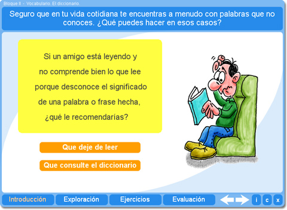
Exploración 1
Permite examinar la estructura general de un diccionario y conocer sus principales elementos.
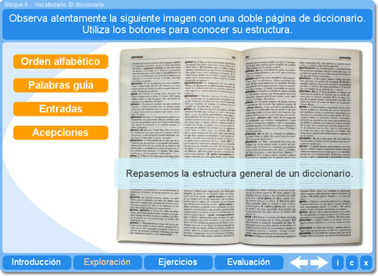
Exploración 2
Muestra la información que se proporciona en una entrada de diccionario.
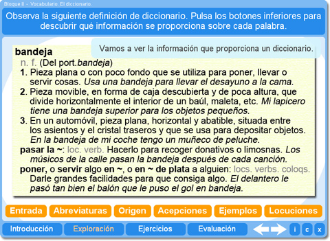
Exploración 3
Define los tipos de diccionarios de uso más habitual.
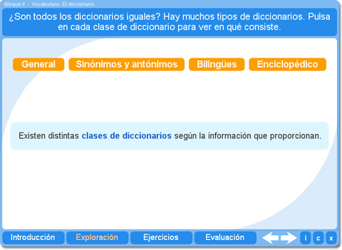
Exploración 4
Anima al alumno a reflexionar acerca de las distintas necesidades que pueden cubrir los diccionarios y le invita a deducir qué tipo de diccionario es el más adecuado en cada caso.
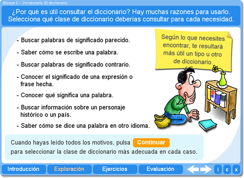
Ejercicio 1
El alumno debe reflexionar sobre el contenido de los diccionarios para resolver una pregunta inicial que permite pasar a la siguiente fase del ejercicio.
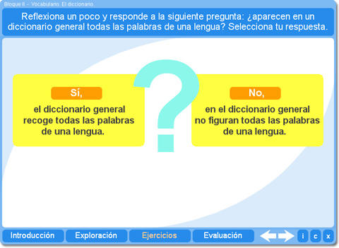
En la segunda fase del mismo ejercicio, el alumno debe clasificar distintas palabras según si aparecen o no en el diccionario.
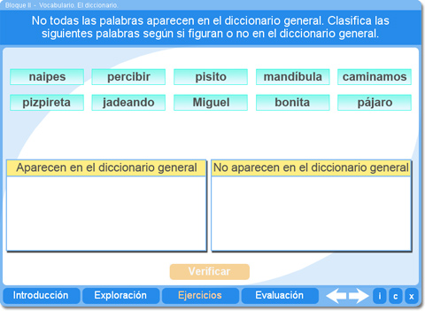
Ejercicio 2
Relacionado con el ejercico anterior, el alumno debe indicar por qué motivo ciertas palabras no aparecen en el diccionario y cómo podría consultar su significado.
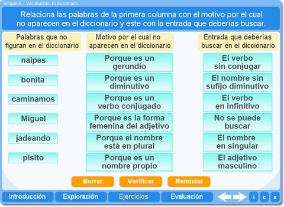
Ejercicio 3
Este ejercicio ofrece al alumno la posibilidad de practicar cómo se ordenan alfabéticamente las palabras.
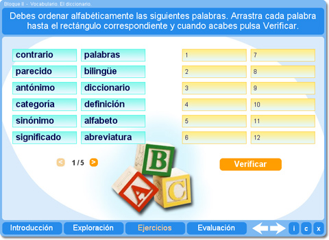
Ejercicio 4
Este ejercicio permite simular la búsqueda de palabras en el diccionario con la ayuda de las palabras guía.
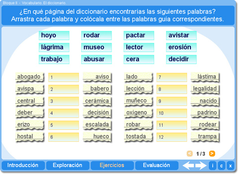
Evaluación
El alumno puede demostrar los conocimientos adquiridos indicando si las distintas afirmaciones que se ofrecen sobre el diccionario son verdaderas o falsas.
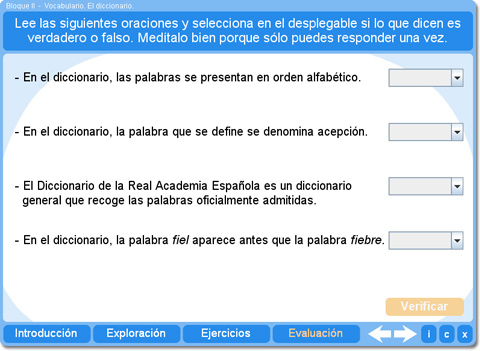
| Los materiales aquí presentados utilizan el applet Descartes Web 2.0. | |

|
Los contenidos de esta unidad didáctica están bajo una licencia de Creative Commons. |